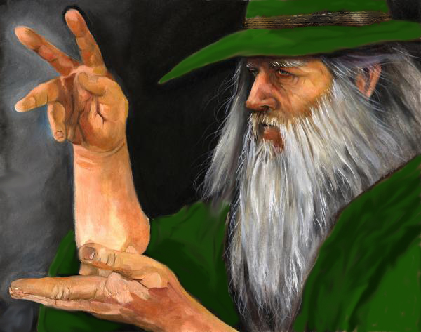

Cool stuff surrounds the world around us if you look close enough! Here at the Museum of Cool Stuff we have looked close enough, and have gathered a collection of cool stuff your eyes may not believe. From holy artifacts to proof of wizards, our exhibitions have information that will shock you. Come visit our exhibits today, and see what magic is in store!
The Museum of Cool Stuff
Welcome to the Museum of Cool Stuff!
The Levant Exhibit
Visit The Levant Exhibit, and see the ancient artifacts of the holy land! Featuring the Ark of The Covenant and The Holy Grail, we delve into detail on the magical holy history of their craftsmenship.
Learn how the Ark of The Covenant moved from place to place, and finally to this museum for your eyes to behold.
The history of the Holy Grail is a long and storied one full of major historical events, and the seeming fates that bind them.
The Wizard Exhibit

Visit the wizard exhibit, and see the secrets of the wizards! Featuring crystal balls, the Emerald Tablet, and a Philosopher's Stone, we devile into how magic has played a vital part in history.
Learn how the usage of crystal balls have evolved through history, from the Neolithic to the Anthropocene.
Discover how the Emerald Tablet was really created, and how the Philosopher's Stone really works.